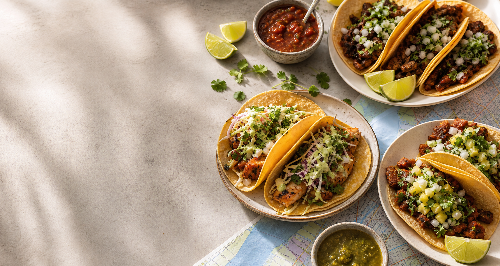

Taco Trail
Find the best tacos near any location.
Juan can enter a city, neighborhood, landmark, or address and get a ranked shortlist built around flavor, distance, value, and local buzz.
Ranked picks
Start with a location
Ready when Juan is hungry.
Search any place to generate a ranked taco route with reasons, tags, and quick map links.